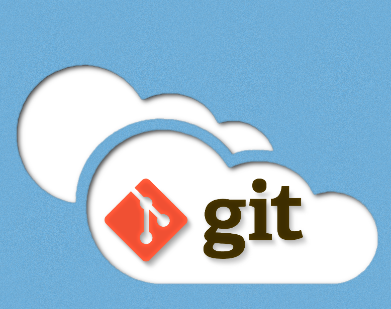

Lasst die Spiele beginnen

I. Git Basics
- Einfach VM starten.
- Terminal aufmachen.
- Aufgabe auf dem Blatt befolgen.
- Zeit: ca. 15 Minuten

II. Collaboration Game
- Tut euch in 2-3er Gruppen zusammen.
- Maximal 8 Gruppen.
- Jede Gruppe bekommt einen Task.
- Jede Gruppe legt sich einen GitHub Account an.
- Forkt das Projekt: https://github.com/studentkittens/git-python-project
- Clont das Projekt in eure VM.
- Der Task kann entweder durch Überlegen oder git Kommandos gelöst werden.
- Wenn fertig: pusht es zu euren Fork.
- Macht ein Pull Request zum Original Repository.
- Falls richtig erledigt wird die LED grüner werden.
III. Visualize!
gource .